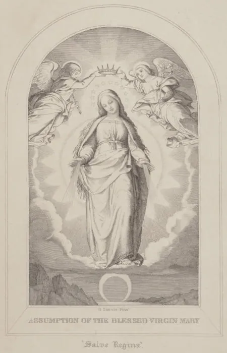

The Glories of MaryFirst pages
THE GLORIES OF MARY

THE
GLORIES OF MARY.
TRANSLATED FROM THE ITALIAN OF
ST. ALPHONSUS LIGUORI,
FOUNDER OF THE CONGREGATION OF THE MOST HOLY REDEEMER.
SECOND AMERICAN EDITION.
NEW YORK:
EDWARD DUNIGAN AND BROTHER,
151 FULTON-STREET, NEAR BROADWAY.
1852.
Entered according to Act of Congress, in the year 1852, by
Edward Dunigan & Brother,
In the Clerk’s Office of the District Court for the Southern District of New York.
Archbishop of New York New York, Jan. 21st, 1852.
PREFACE TO THE AMERICAN EDITION.
The edition of the “Glories of Mary” now presented to the Catholic public of America is the first complete translation of the work ever made into the English language. We trust that it will be found to retain the spirit of the learned and saintly author, and that it will be welcomed by the faithful in this country with the same delight which it has universally called forth in Catholic Europe.
PROTEST OF THE AUTHOR.
In obedience to the decrees of Urban VIII., of holy memory, I protest that I do not intend to attribute any other than purely human authority to all the miracles, revelations, graces, and incidents contained in this book; neither to the titles holy or blessed applied to the servants of God not yet canonized; except in cases where these have been confirmed by the holy Roman Catholic Church, and by the holy Apostolic See, of whom I profess myself an obedient son; and therefore to their judgment I submit myself and whatever I have written in this book.
PETITION OF THE AUTHOR TO JESUS AND MARY.
My most loving Redeemer and Lord Jesus Christ, I thy poor servant, knowing how pleasing to thee are those who seek to glorify thy most holy mother, whom thou lovest so much, and dost so much desire to see loved and honored by all men, I propose to publish this book of mine which treats of her glories. I know not to whom I could commend it but to thee, who hast so much at heart the glory of this mother. To thee, then, I present and dedicate it. Receive this little offering of my love for thee and thy beloved mother. Take it under thy protection, and pour into the hearts of those who read it the light of confidence in this immaculate Virgin, and the warmth of a burning love for her, in whom thou hast placed the hope and refuge of all the redeemed. And for the reward of this, my poor effort, give me, I pray thee, that love for Mary with which I have desired to inflame, by this my little work, the hearts of all those who read it.
To thee also I appeal, oh my sweetest Lady and mother Mary. Thou knowest that in thee, next to Jesus, I have placed all hope of my eternal salvation, since all the good I have received, my conversion, my vocation to leave the world, and whatever other graces have been given me by God, I acknowledge them all as coming through thee. Thou knowest that to see thee loved by all as thou dost deserve, and to offer thee some token of gratitude, I have always sought to proclaim thee everywhere, in public and in private, and to inspire all men with a sweet and salutary devotion to thee. I hope to continue to do so for the remainder of my life, even to my last breath. But I see by my advanced age and declining health that the end of my pilgrimage and my entrance into eternity are drawing near; therefore, I hope to give to the world, before my death, this little book of mine which may continue to proclaim thee for me, and also may excite others to publish thy glories and the great mercy which thou dost exercise towards thy devoted servants. I hope, my most beloved queen, that this my poor offering, although it falls so far short of thy merit, may be pleasing to thy grateful heart, since it is wholly a gift of love. Extend, then, that most kind hand of thine with which thou hast delivered me from the world and from hell, and accept it and protect it as belonging to thee. But I ask this reward for my little offering, that henceforth I may love thee more, and that all into whose hands this work shall fall, may be inflamed with thy love, so that immediately their desire may increase to love thee, and see others love thee also; and that they may engage with all ardor in proclaiming and promoting, as far as possible, thy praise, and confidence in thy most holy intercession. Thus I hope, thus may it be.
TO THE READER.
In order that this little work of mine may not be exposed to censure from very fastidious critics, I have thought it best to place in a clearer light some of the propositions which it contains, and which may seem too bold, or perhaps obscure. I here enumerate some of them, and if others, my dear reader, should come under your eye, I pray you to consider them as meant and spoken by me according to the sense of true and sound theology, and of the holy Roman Catholic Church, whose obedient son I profess myself. In the introduction, page 19, referring to chap. 5th of the book, I have said that God has ordained that all graces should come to us through the hands of Mary. Now this is a very consoling truth for souls tenderly attached to the most holy Mary, and for poor sinners who desire to be converted. Nor should this appear to any one inconsistent with sound theology, since its author, St. Augustine, puts it forth as a general statement, that Mary has shared, by means of her charity, in the spiritual birth of all the members of the Church.
A well-known author, whom no one will suspect of exaggeration or of fanciful and overheated devotion, adds, that as Jesus Christ really formed his Church on Calvary, it is plain that the holy Virgin really co-operated with him, in a peculiar and excellent manner, in its formation. And for the same reason it may be said, that if she brought forth Jesus Christ, the head of the Church, without pain, she did not bring forth the body of this head without pain. Hence she commenced on Calvary to be, in a particular manner, mother of the whole Church. To say all in a few words, Almighty God, in order to glorify the mother of the Redeemer, has ordained that her great charity should intercede for all those for whom her divine Son offered and paid the superabundant ransom of his precious blood, in which alone is our salvation, life, and resurrection. It is on the basis of this doctrine and whatever belongs to it that I have undertaken to establish my propositions, which the saints in their affecting colloquies with Mary, and in their fervent discourses concerning her, have not hesitated to assert: whence an ancient father, quoted by the celebrated Vincenzo Contensone, has written: The fulness of grace was in Christ as the head from which it flows, but in Mary as the neck through which it is transmitted. This is plainly taught by the angelic Doctor, St. Thomas, who confirms all the foregoing in these words: The blessed Virgin is called full of grace in three ways.... The third, in reference to its overflowing upon all men. For great is it in each saint if he hath enough of grace for the salvation of many; but this would be the greatest, if he had enough for the salvation of all men; and it is so with Christ and the blessed Virgin, for in every danger we may obtain salvation through the glorious Virgin. Hence, cant. 4, v. 4, a thousand bucklers—that is, remedies against dangers—hang upon her; “Mille clypei pendent ex ea.” Hence in every virtuous work we can have her aid, and, therefore, she herself says, In me is all hope of life and of virtue: “In me omnis spes vitæ et virtutis.”—Eccli. xxiv. 25.
INTRODUCTION
WHICH OUGHT TO BE READ.
My dear reader and brother in Mary, since the devotion which has urged me to write, and now moves you to read this book, renders us both happy children of this good mother, if you ever should hear any one say that I could have spared this labor, there being so many learned and celebrated books that treat of this subject, answer him, I pray you, in the words of Francone the abbot, which we find in the Library of the Fathers, that the praise of Mary is a fountain so full that the more it extends, the fuller it becomes, and the fuller it becomes the more it extends; which signifies, that the blessed Virgin is so great and sublime, that the more we praise her, the more there is to praise. So that St. Augustine says: All the tongues of men, even if all their members were changed to tongues, would not be sufficient to praise her as she deserves.
I know that there are innumerable books, both great and small, which treat of the glories of Mary; but as these are rare or voluminous, and not according to my plan, I have endeavored to collect in a small space, from all the authors at my command, the most select and pithy sentences of the Fathers and theologians, in order to give devout persons an opportunity, with little effort or expense, to inflame their ardor by reading of the love of Mary, and especially to present materials to priests which may enable them to excite by their sermons devotion to the divine mother.
Worldly lovers are accustomed to mention frequently and to praise the persons beloved, that these may be praised and applauded also by others; then how poor must we suppose the love of those to be who boast of being lovers of Mary, but who seldom remember to speak of her, and inspire the love of her also in others! Not so the true lovers of our most lovely Lady: they would praise her everywhere, and see her loved by all the world; and therefore in public and in private, wherever it is in their power, they endeavor to kindle in the hearts of all, those blessed flames of love with which theirs are burning for their beloved queen.
But that every one may be persuaded of how great benefit it is to himself and the people to promote devotion to Mary, let us hear what the Fathers say of it. St. Bonaventure declares that those who are devoted to publishing the glories of Mary, are secure of paradise; and Richard of St. Laurence confirms this by saying, that to honor the queen of angels is to acquire life everlasting; since our most grateful Lady, adds the same author, pledges herself to honor in the other life him who promises to honor her in this; and is there any one ignorant of the promise made by Mary herself to those who engage in promoting the knowledge and love of her upon the earth? “They that explain me shall have life everlasting,” as the holy Church applies it on the festival of her Immaculate Conception. Exult, exult! oh my soul! said St. Bonaventure, who was so assiduous in proclaiming the praises of Mary, and rejoice in her, because many good things are prepared for those who praise her; and since all the Holy Scriptures, he added, speak in praise of Mary, let us endeavor always with heart and tongue to celebrate this our divine mother, that we may be conducted by her to the kingdom of the blessed.
We are told in the revelations of St. Bridget, that the blessed Emingo, Bishop, being accustomed to begin his sermons with the praises of Mary, the Virgin herself appeared one day to the saint, and said to her, “Tell that prelate who is accustomed to commence his discourses with my praises, that I will be his mother, and that I will present his soul to God, and that he shall die a good death;” and he indeed died like a saint, in prayer and in celestial peace. Mary appeared before his death to another religious, a Dominican, who was accustomed to terminate his sermons by speaking of her. She defended him from the assaults of the demons, comforted him, and bore away with her his happy soul. The devout Thomas à Kempis represents Mary as commending to her Son those who publish her praises, and saying, “Oh, my Son, have compassion on the souls of thy lovers, and of those who speak in my praise.”
As far as the advantage of the people is concerned, St. Anselm says, that the sacred womb of Mary having been made the way of salvation for sinners, sinners cannot but be converted and saved by discourses in praise of Mary. If the assertion is true and incontrovertible, as I believe it to be, and as I shall prove, in the fifth chapter of this book, that all graces are dispensed by the hand of Mary alone, and that all those who are saved, are saved solely by means of this divine mother; it may be said, as a necessary consequence, that the salvation of all depends upon preaching Mary, and confidence in her intercession. We know that St. Bernard of Sienna sanctified Italy; St. Dominic converted many provinces; St. Louis Bertrand, in all his sermons, never failed to exhort his hearers to practise devotion towards Mary; and many others also have done the same.
I find that Father Paul Segneri, the younger, a celebrated missionary, in every mission preached a sermon on devotion to Mary, and this he called his favorite sermon. And we can attest, in all truth, that in our missions, where we have an invariable rule not to omit the sermon on our Lady, no discourse is so profitable to the people, or excites more compunction among them, than that on the mercy of Mary. I say on the mercy of Mary: for St. Bernard says, we may praise her humility, and marvel at her virginity; but being poor sinners, we are more pleased and attracted by hearing of her mercy; for to this we more affectionately cling, this we more often remember and invoke. Therefore in this little book, leaving to other authors the description of the other merits of Mary, I have confined myself especially to treating of her great compassion and her powerful intercession; having collected, as far as possible, with the labor of years, all that the holy Fathers and the most celebrated authors have said of the mercy and power of Mary; and because these attributes of the blessed Virgin are wonderfully set forth in the great prayer of the Salve Regina, approved by the Church, and required by her to be recited the greater part of the year by all the clergy, secular and regular, I have undertaken, in the first place, to explain in separate discourses this most devout prayer. Besides this, I believed it would be acceptable to the servants of Mary, if I added discourses on her principal festivals and upon the virtues of our divine mother, placing at the conclusion of them the practices of devotion most in use among her servants, and approved by the Church.
Devout reader, if this little work of mine pleases you, as I hope it will, I pray you to commend me to the holy Virgin, that I may obtain great confidence in her protection. Ask for me this grace, and I will ask the same for you, whoever you may be, who bestow on me this charity. Oh, blessed is he who clings with love and confidence to those two anchors of salvation, Jesus and Mary! He certainly will not be lost. Let us both say, oh my reader, with the devout Alphonso Rodriguez: Jesus and Mary, my sweet loves, for you I will suffer, for you I will die; may I be wholly yours, may I be in nothing my own. May we love Jesus and Mary, and become saints, since we can aspire and hope for no greater happiness than this. Farewell, till we meet in heaven at the feet of this sweet mother and her dearly beloved Son, to praise them, to thank them, and love them, in their immediate presence through all eternity. Amen.
That is the end of the first pages. To keep reading, download the whole book, free:
Which one? The PDF opens straight away in the browser, on any phone or computer. The EPUB is saved in Downloads and is read with a reading app (Google Play Books on Android, Books on iPhone, Kindle or Kobo), which lets you enlarge the text.